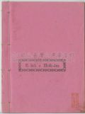
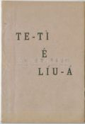

Languages
台文
｜
中文
｜
日本語
｜
English
字體
小
｜
中
｜
大
首頁
/
白話字數位典藏
白話字數位典藏全文檢索
查詢模式
選擇年代
清國時代(1885-1895)
日本時代(1895-1945)
戰後(1945-1969)
1885-1895
1896-1905
1906-1915
1916-1925
1926-1935
1936-1945
1946-1955
1956-1965
1966-1969
1970-1980
1980-1990
1990-2000
2000-2010
2010-
選擇文類
詩
散文
小說
戲劇
傳記
選擇作者
陳清忠
陳清義
編輯部
柯設偕
吳天命
明有德
偕叡廉
周天來
劉華義
王守勇
林茂生
陳添旺
王占魁
柯維思
賴仁聲
陳瓊琚
雪峰逸嵐
吳清鎰
郭水龍
蕭樂善
許水露
葉金木
陳金然
章王由
廖得
鄭連坤
楊士養
潘道榮
梁秀德
劉約翰
周淑慧
高金聲
林燕臣
黃六點
蔡愛義
許有才
主筆
巴克禮
陳鳩水
郭朝成
張基全
陳明清
陳能通
拾穗生
顏振聲
卓恆利
傳道局
胡文池
劉主安
鄭兒玉
Google Search
Yahoo Search
全部
刊名
標題
標題(教羅)
全文
全文(教羅)
作者
第7頁，共7頁(共139筆資料) 0.71354198455811sec
1
...
3
4
5
6
7
To Page
GO
文字列表
圖文列表
排序
日期
文類
刊名
作者
影像
[1928-1 台灣教會報 文類-小說 作者--/-]
農夫掠著鶴 [ Lông-hu Lia̍h-tio̍h Ho̍h ]
農夫掠著鶴 1928.01.01 514卷p.6 早時希臘國有一個故事，論莫濫交歹名聲的飛鳥。 有一個作田人看白鴒鷥，暗光鳥，彼號的鳥不時來食伊的五穀就張網來掠。捌一日佇所掠著的中間有一隻白鶴。其餘的鳥無啼無哭：算所拄著的是平常的事。毋kú彼隻鶴哀怨淒慘，對田主求命。 鶴排列伊的情理，講伊毋是白鴒鷥，也毋是暗光鳥，獨獨是通可憐的鶴nā-tiāⁿ。伊講起伊的有孝，講伊盡囝的本份款待父母：in老的時伊飼in；設使in欲別tè去，伊就予in坐伊的尻脊頂飛去所愛到的所在。作田人應伊，講，「你所講kiám-chhái攏是有影；毋kú我掠著你是歹鳥的中間，teh佮in相佮偷食我的五穀，...
[1924-5 台南府城教會報 文類-小說 作者--/-]
烏面囡仔忠直心 [ O͘-bīn gín-ná Tiong-ti̍t-sim ]
烏面囡仔忠直心1924.05 470卷 p.5-6(翻譯)Tī某所在有一擺tī品評會ê時，有兩隻細隻馬，到極suí。顧馬ê烏面查甫囡仔，名叫Cato(Khe-to)。In行tī跑馬場時，hiah ê馬真gâu聽趁hit ê烏面囝仔ê嘴。歇睏ê時，馬用in ê頭殼luî Cato ê身軀，親像真gâu疼Cato ê款式。 Hit-tia̍p有一個ài買馬ê人，問烏面囝仔講：「你ài賣偌多錢？」Cato說：「1000箍！」Hit ê人講：「哇！Hiah貴。我hō͘你600箍，好m̄?」Cato搖頭m̄肯。Hit時真濟人來teh看馬，總是無人ài買。Hit ê ài買ê人Koh,來講：「我kā講，真...
[1919-3 台灣教會報 文類-小說 作者--/-]
雜喙翁 [ Cha̍p chhuì Ong ]
雜喙翁1919.03 408卷 p.7-9十碎翁年歲老啦！頭毛白親像銀絲，四肢無肉，青筋浮起，宛然蜘蛛網，嘴phoé 骨thóng出親像一對ê山尖，總是目珠iáu利，看冊罕得用目鏡。看伊ê面貌thang見出有經過世間大憂鬱ê土窟。有一日來了一張批，拆開一下看，面現躊躇連續吐氣，批內所記是人teh kā 伊報一個新婦，這層是喜事，翁thái-thó 吐氣？因為最親愛ê同伴7年前佮伊做永遠離別，今仔日beh 有新婦啦，總是看bē 著，koh tī這層也無thang佮伊參詳。Haih！翁ê吐氣thài 會無因端leh?總是翁tī 晚景ê 吐氣有比che較悲哀--ê,我ê手那chhoah ，這枝筆若準...
[1918-9 台灣教會報 文類-小說 作者--/-]
細漢囝仔 [ Sè-hàn Gín-ná ]
細漢囡仔1918.09 402卷 p.8(蘭醫生娘記。)真珠iáu-boē到度晬已經bat toà亞美利加，歐羅巴以及澳大利亞洲。這個查甫囡仔出世tī加拿大 ê 西爿；tī-hia有英國人，也有紅面番。真珠若見著人，無論是白面抑是紅面，面仔笑gī-gī;tuì án -ni 逐人都做伊ê朋友。凡若tú著伊ê 人，不管伊ê 親人抑是甚mi̍h外口人，攏總愛kap伊行禮。真珠phut-phut跳，也kap人tìm頭。 真珠ê 父母m̄是好額人，in所toà ê 厝是用杉家己起--ê;頭路是作穡。Tī 冬天ê時陣非常寒，kian霜掛落雪，致到土tēng若鐵，所以tī園--ni̍h bē做tit工。 ...
[1915-9 台灣教會報 文類-小說 作者--/-]
塗炭仔 [ Thô͘-thoàⁿ-á ]
塗炭仔。 1915.9，no.366，pp.11-12 某國有兄弟兩人做朝內的文官。兄哥有生一个查某囝名叫寶善。到14歲，父母攏過往，就予in叔chhoā去照顧。小弟也有生兩個查某囝；一个名叫寶珠，一个名叫寶玉。寶珠這時12歲，寶玉13歲。In老父這時身體致病，就辭官回家養病。 In嬸真疼伊兩个查某囝，每日干焦顧梳妝。寶善每日料理煮食洗衣裳，也著揀塗炭，致到身軀常常有塗炭的 lâ-sâm，紲共伊叫做塗炭仔。總是遐爾著磨亦毋捌受氣，算是真好女德。對來in叔兜7年久，伊兩个小妹妝thāⁿ媠媠閒閒，伊攏毋捌傾分，家己逐日認職理家。 這時拄著太子欲娶某，召通國的在室女，著來予伊請。彼霎...
[1914-9 台灣教會報 文類-小說 作者--/-]
戇人講戇話 [ Gōng-lâng kóng gōng-oē ]
戇人講戇話1914.09 354卷 p.7-8Ai-su-lân (Iceland)一个少年人走過某沙陸地，拄著一人騎一隻細隻馬，行狀驚惶真奇怪，就佮伊相佮講話。Ai-su-lân人問講：「君尊姓大名？」應講：「名Sū-thê-hun。」閣問伊是甚物人的囝？應講：「Thoat-ní-su-thèng的囝。」閣問伊講：「君欲tó去？」伊應講：「我因為偷掠一隻羊，欲去監獄。」閣問伊講：「你已經犯罪，怎樣無人來帶你去？」伊應講：「衙門公事真濟，無閒通來掠我，吩咐我家己著去，所以予我一張單做入監的憑據。」講煞，大家相離別。後...
[1913-8 台南府城教會報 文類-小說 作者--/-]
復到原質 [ Ho̍k-tò Goân-chit ]
復到原質1913.08 P.9-10 早年有一個朋友得著兩粒大粒柑，食了涼 koh 甜，就想beh chhoē 柑叢來種。Tú-tú teh想就m̄-ta̍t將所食ê 柑仔來tiām， tiām-了有出，就小心照顧，經過幾若年就開花結果子，種ê人心不止得意。總是所結ê 果子 m̄是柑，有ê 生 香圓，有ê 生 酸 koh 細粒 ê 桔仔。 Tiām 柑籽 ê人真奇怪，m̄-若khó͘-chheh伊ê用工，是goân-ngia̍h hit個理氣不明，後來有tú-著 熟行ê朋友就請教伊講：我有tiām 柑籽， 因何生香圓， 生桔仔？ Hit個朋友就kā伊講，你所講kài親像我有一位朋友，伊 tī...
[1908-4 台南府城教會報 文類-小說 作者--/-]
翅股ê譬喻 [ Si̍t-kó͘ ê Phì-jū ]
翅股ê譬喻1908.04 277卷 p.30 早前有人講原底鳥隻攏無發翅，kan-ta ē跳ē走。若四界去討食，kiám-chhái 拄著貓狗就beh咬去。Hit時beh跳走，毋過走袂赴，因為腳步是細伐，常常袂免得拄著悽慘死失。到後來chi̍t隻ê老鳥為著這號災難就ûn-á teh想，看有甚麼步通脫離。佳哉想出一个計智，就是備辦兩个翼股來掛在身。有一日就匯集hiah ê眾鳥來saⁿ-kap議論，看有甚麼計策通脫離野獸咬食ê災難。老鳥創兩个翼股帶便便就起來講：照我teh打算，創親像我帶這兩支翅，真正大路用。In若beh來咬咱，咱就通出力飛上懸，in就無法咱ta何。眾鳥吐氣應講，Taⁿ 按呢生是閣...
[1908-4 台南府城教會報 文類-小說 作者--/-]
夢見 [ Bāng-kìⁿ ]
夢見 1908.04 277卷 p.25-26 捌有一个好額信主ê婦jîn人，卻熱心服事上帝，不過出無偌濟錢做教會ê路用抑是幫贊sàn-hiong人。伊請一个人顧花園。Hit个顧園--ê猶原熱心服事主，常常講道理做禮拜，教主日學，hit號伊攏歡喜。若論出錢做傳道束脩，修理拜堂佮贊sàn-hiong人，伊攏真甘願。伊捌予頭家娘小可責備講伊出錢做教會ê路用到過頭。總是顧園--ê應講，主疼我到按呢，就應該出ná濟ná好，這攏無甚麼功勞佇teh，其實kan-ta盡本份nā-tiāⁿ。有一暝hit个婦jîn人夢見伊已經過身到天堂。入天堂ê園裡就逐所在攏有師傅teh起厝，有ê真大間，有ê細細間。 伊就問c...
[1907-9 台南府城教會報 文類-小說 作者--/-]
摩氏 [ Mō͘-sī ]
摩氏1907.09 270卷 p.70-72Tī倫敦城ê東旁有濟濟猶太人作夥 tī-hia 企起，較大面是teh做生理；總是oh得趁食。某日有一個名摩氏tī街路teh行，真趕，若親像破病，本身家己teh唸講，天氣無到偌寒，有出日，我thài-thó寒到án-ni？但m̄知beh àn-choáⁿ？驚了無力 thang行到厝。今仔日做這m̄成生理，koh無啥人買，利無聲thang o；人聽了也m̄知伊teh賣啥貨。腹肚枵到扑結kiû求，真正可憐事ah！往過若趁無食，伊ê 厝邊提淡薄贊伊，今chit moá無，因為 tī in ê中間失體面，一項無後生，koh 大查某子去嫁基督徒。厝邊攏嫌伊，准伊...
[1901-9 台南府城教會報 文類-小說 作者--/-]
著傷ê手 [ Tio̍h-siong ê chhiú ]
著傷ê手1901.09 198卷 p.69-71 佇某所在有一个人名uî-lîm，伊ê姓無甚乜要緊，毋免講：咱叫伊uî-lîm就好。彼个人毋信上帝，因為兩年前伊ê婦jîn人佮囝死。對按呢講：上帝taⁿ無疼我，所以硬心，毋去禮拜，也毋聽人苦勸。年過年ná硬心，人拍算伊無甚乜煩惱經過ê事；實在對in毋捌。 uî-lîm真疼囡仔，心內大大嫌上帝毋留伊ê囝予伊飼到長成。伊真愛彼个囡仔活去讀冊做學問ê人；taⁿ無彩！真毋願。到 十外年後有人teh喊火燒厝。彼間厝內有老守寡人佮伊ê細漢孫teh蹛；濟濟人走倚愛beh拍火，可惜siuⁿ晏到；厝teh-beh倒。老人卻予in 救出來；囡仔，攏袂記得，湊巧聽伊ê...
[1900-7 台南府城教會報 文類-小說 作者--/-]
兩個鬼 [ Nn̄g ê kuí ]
兩个鬼1900.07 184卷 p.57-58(接前卷第52面。)窮鬼問講，Beh án-choáⁿ會知人信抑m̄信？富鬼應講，世上生理買賣的確有掛字號招牌，信鬼ê 人也的確有招牌，或是門頂tah 鍾馗，門神；或是訂五雷碗；或是糊金符，黃表紙，kap朱紗符；或是頭殼結朱紗字，手骨黏朱紗咒；或是寫姜太公 tī 牆頂；或是房門頂寫結升高照；或是對門刻石敢當；或是掛thâi人 ê 刀；或是手--ni̍h 掛浮tô筋ê 環仔。Che攏是驚鬼信鬼ê 招牌。若入這號人家作chōng,定著得意發財。 若是入藐視鬼 ê 家，必定空費了心機，有時iáu著克虧受苦。從今以後，著較留神--teh，見著信基督 ê人就...
[1900-6 台南府城教會報 文類-小說 作者--/-]
兩個鬼 [ Nn̄g ê Kuí ]
兩个鬼1900.06 183卷 p.51-52(翻譯。)某日有兩個鬼tī 街--ni̍h 行游，一個是富鬼，一個是窮鬼。富鬼兄弟5 人，大--ê 名雞腳鬼，第2個名妝畫鬼，第3個名哄人鬼，第4個名公騙鬼，第5個名精靈鬼。In ê 父名千年古怪，相kap流傳講這五個鬼bat 鬧過判官。窮鬼兄弟 10人，大--ê 名糊塗鬼，第2個名放蕩鬼，第3個名拖磨鬼，第4個名急慌鬼，第5個名薰鬼，第6個名奸鬼，第7個名屈死鬼，第8個名 Kông鬼，第9個名酒鬼，第10個名洋煙鬼。In ê 父名萬年鬼，相kap流傳講這10個鬼bat 鬧過刑具。 富鬼遇著窮鬼問講，世間金銀滿地，你怎樣致到chiah-nī 貧窮 ...
[1900-2 台南府城教會報 文類-小說 作者--/-]
拖車ê譬喻 [ Thoa-chhia ê phì-jū ]
拖車ê譬喻1900.02 179卷 p.1-3 現時佇台灣某庄有一條山路真崎較oh得peh。佇hit條路有一張車teh行。佇前面有一個人真出力teh拖，後面有幾nā人teh sak愛beh sak到山頂。大家攏teh流汗因為佇車頂teh坐有真濟查甫人，婦jîn人佮囡仔。論車裡teh坐hiah-ê人從中有ê真老掛軟chiáⁿ；有ê真勇掛少年；有ê是好額有ê sàn-hiong。Hiah-ê坐車ê是真快活也真歡喜。In代先攏無坐車。Hit時in猶原peh上hit條山路，又擱有sak擱一張真重ê車，大家真艱苦，總是到這tia̍p in本身坐車就變做貧惰。論hit个佇前面teh拖車ê人佮佇後面teh ...
[1897-9 台南府城教會報 文類-小說 作者--/-]
真理ê譬喻 [ Chin-lí ê phì-jū ]
真理ê譬喻1897.09 150 卷 p.70-71 中國一个人有捌講：論到我脫離罪惡，來得著重頭生hit層事，有通譬喻親像一個人跋落土窟真深，家己袂得出來； 佇遐哀哀叫，直直向望看有一个朋友beh拖我起來。拄拄teh想hit時看見窟ê頂面有一个老先生倚來，伊ê頭毛白白，屬佇尊貴ê人款。伊看落來，紲出聲teh講：我ê囝這tah是悽慘ê所在。我應伊講，實在有影我艱苦到極，請你伸手牽我出來。 Hit-ê老先生應講，我ê囝我就是孔子，你若從前捌讀我ê冊，紲趁我ê教示，就你毋免到這个艱苦ê所在。我就應伊講，我ê老父你ê話真著，總是你kiám無法度通救我？講了閣看這个孔子已經去lah，無法伊。停無偌久閣...
[1897-8 台南府城教會報 文類-小說 作者--/-]
兩人替我死 [ Nn̄g-lâng thè goá sí ]
兩人替我死1897.08 149卷 p.63-64 Tī 大英國有一所在近倚海墘，某日有兩人tī-hia做伙企--teh,談論一層事。一個teh
[1914-1 台大楊雲萍文庫白話字史料(編修) 文類-小說 作者--/-]
(35)
長遠兩友相論 (Two Friends) [ Tiông oán Lióng-iú Siong-lūn ]
...

[不詳 台大楊雲萍文庫白話字史料(編修) 文類-小說 作者--/-]
(32)
E-lek的福音 [ E-lek ê hok-im ]
...

[1917-1 台大楊雲萍文庫白話字史料(編修) 文類-小說 作者--/-]
(37)
Te-tì的鈕仔 (Teddy's button) [ Te-tì ê Liú-á ]
...
第7頁，共7頁(共139筆資料)
1
...
3
4
5
6
7
To Page
GO
數位典藏國家型科技計劃
拓展台灣數位典藏計畫
版權所有 國立台灣師範大學 台灣文化及語言文學研究所©2008
10610 台北市和平東路一段162號│TEL 02-7734-5516│Fax 02-2358-2461
計劃簡介
典藏特色
執行架構
計畫典藏數位化流程
成員介紹
台灣白話字發展簡介
巴克禮牧師與《台灣教會公報》
廈門話字典-杜嘉德
白話字教學-打馬字
中國南方白話字發展
台灣基督教長老教會簡表
台灣基督教長老教會教會歷史委員會
《北部台灣基督長老教會教會ê歷史》
關於陳清忠
白話字文學：台灣文學的早春